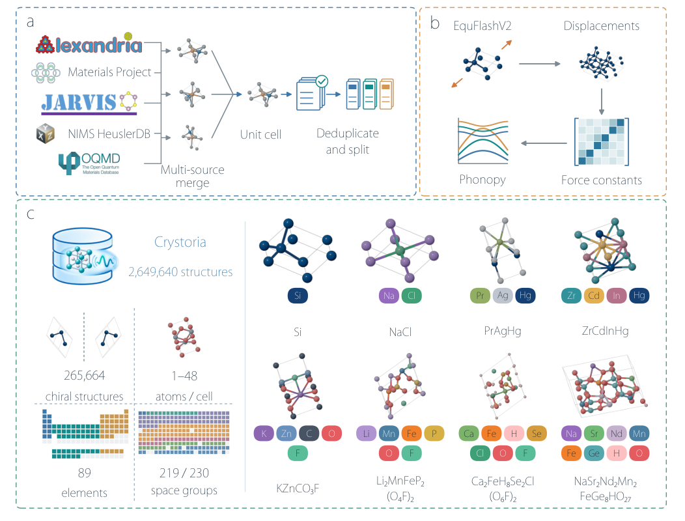
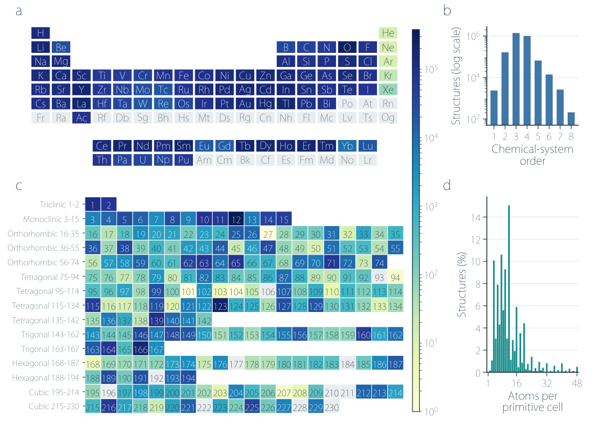
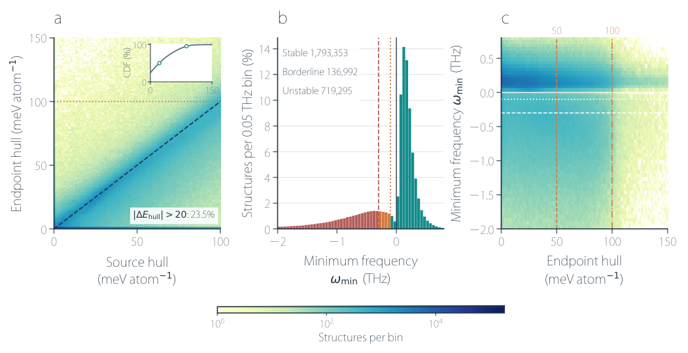

Crystoria：给百万晶体补上“原子轻微扰动后是否站得住”这一维信息
论文原文 ↗原文：Ke-Xin Pang、Ze-Feng Gao、Yan Gao、Zhong-Yi Lu，Crystoria: A Large-Scale Crystal Dataset Linking Thermodynamic and Dynamical Stability for Materials AI，arXiv:2610.38195，2026。原文 · · 数据
晶体生成模型已经可以提出大量结构，但怎样给它们贴上有物理意义的标签，仍是材料 AI 的核心问题。一个常用指标是凸包上能量：比较某种组成的晶体与可能分解成的其他相，判断它在能量上是否有竞争力。另一个问题同样重要：把晶体中的原子稍微挪动，结构会被恢复力拉回来，还是会顺着某种集体位移继续变形？后者对应动力学稳定性，通常需要声子计算。
声子可以理解为晶格中原子集体振动的模式。如果某个模式的频率为虚数，就意味着沿着该位移方向，原结构附近的能量会下降。能量低、结构优化后的力小，与没有这种不稳定振动，是三种不同的信息。
已有结构数据库达到百万量级，而系统声子数据长期落后。Crystoria 的工作是利用通用机器学习原子间势，把统一的结构弛豫与声子计算推进到 2,649,640 个晶体，让热力学竞争与动力学稳定性能够在同一套数据中分别检索、联合使用。
从多个结构库到一条统一计算链
作者从 Alexandria、Materials Project、JARVIS、NIMS HeuslerDB 和 OQMD 收集有序三维无机晶体，选择原胞包含1—48个原子、来源凸包上能量不超过100 meV/atom的结构。这里的原胞是重复构成整个晶体的最小周期单元。
同一个晶体可能因为晶格基矢、原点或原子排列顺序不同而以多个条目出现。作者先统一到原胞表示，再按保持元素身份的原子对应关系去重。空间反演得到的手性伙伴则单独处理：它们的能量和声子频率相同，但涉及左右手性的性质可能不同。最终数据包含2,516,445个来源结构及133,195个补充的反演伙伴，后者继承母结构的能量和声子标量。

图1｜五个数据库统一结构身份，接入机器学习势弛豫、位移受力与声子计算，再得到可检索的晶体数据。
随后的每个来源结构经过相同流程。首先，EquFlashV2 机器学习势同时优化晶胞和原子位置，最大剩余力达到0.03 eV/Å，计算最多进行200步。机器学习势在这里替代昂贵的逐结构第一性原理受力计算，让大规模处理成为可能。
然后，将弛豫后的原胞扩展成2×2×2超胞，并给原子施加0.01 Å的小位移。位移前后受力的变化，描述“移动这个原子，会怎样影响其他原子的力”，由此构造力常数矩阵。Phonopy 将它转成不同波矢下的集体振动模式，在12×12×12网格上求出频率。
每个结构保留最低频率这一连续量，并按统一标准分成三类：最低频率不低于−0.10 THz为稳定，−0.30至−0.10 THz之间为临界，低于−0.30 THz为不稳定。负数是文中表示虚频的方式；这两个阈值把接近零频的软模式与较明显的不稳定模式区分开。
最后，作者还在统一、兼容MP2020校正的参考凸包上评价弛豫结构的模型能量。于是，一条数据同时包含原始来源能量、弛豫后结构的凸包上能量、最低声子频率和分类标签；结构以晶格、元素及分数坐标保存，便于接入生成或性质预测模型。
数据的覆盖：重点落在紧凑的多组分晶体
Crystoria覆盖89种元素、230个空间群中的219个，以及全部七个晶系。三元和四元化合物合计占90.60%，91.28%的结构原胞不超过20个原子。这意味着它的主要覆盖对象是紧凑的多组分无机晶体，在这些体系中，不同元素的局部环境和共同振动可以进入统一的统计分析。

图2｜元素覆盖、组分数、空间群及原胞大小共同说明数据集主要包含哪些化学与晶体结构。
对生成模型而言，数据由一套原子坐标进一步连接到物理响应：可以选择稳定结构训练，也可以把最低频率作为条件；不稳定与临界结构则为分类、排序和理解失效提供对照。连续频率还能区分“略有软化”和“强烈不稳定”，比单个二元标签提供更多信息。
主要发现：低能量和动力学稳定只部分重合
按统一声子阈值，数据集中 1,793,353个结构，即67.68%，属于稳定类；136,992个属于临界类，719,295个属于不稳定类。这里的标签来自EquFlashV2受力计算得到的谐振动响应。

图3｜a 比较来源和弛豫结构的凸包上能量；b 展示最低声子频率分布；c 将能量与频率放到同一平面，显示两种稳定性判断的交集和差异。
两种稳定性指标存在总体关联：稳定类结构的凸包上能量中位数为16.76 meV/atom，不稳定类为37.65 meV/atom。但在凸包上能量不超过10 meV/atom的980,560个结构中，仍有 19.17%属于动力学不稳定类。另一方面，339,576个动力学稳定结构的凸包上能量高于50 meV/atom，它们在局部振动意义上站得住，却面对其他相组合的能量竞争。
因此，数据库允许研究者直接选择两者交集：要求弛豫后凸包上能量不超过50 meV/atom，并同时通过声子稳定标准，可留下 1,453,777个结构。这种联合过滤能用于生成模型的训练数据整理，也能用于候选结构排序。
另一个有用结果是，99.04%的结构在弛豫前后保留相同空间群，而其中仍有27.07%动力学不稳定。结构优化约束的是能量的一阶导数，即受力；声子评价的是能量曲率。即使对称性没有变化，两种计算仍在回答不同问题。
声子标签与第一性原理参照怎样比较
作者使用9,958个已有DFT-PBE声子结果的非磁半导体作为外部参照，其中8,189个稳定、1,769个不稳定。比较时固定相同DFT结构，沿用相同超胞、位移及波矢，从而比较不同受力模型的振动响应。
EquFlashV2的稳定性分类准确率为 95.11%，平衡准确率为 91.22%。平衡准确率是稳定与不稳定两类召回率的平均，避免多数类主导结果；两类召回率分别为97.25%与85.19%。该参照采用其自身的声子容差约定，用来评价受力模型的分类表现；Crystoria全量数据则采用前述统一网格和频率阈值。
这项数据资源新增了什么
Crystoria把“结构—能量”的常用数据链延长为“结构—相竞争能量—晶格恢复响应”。核心价值是将原来较小规模的声子信息扩展到百万量级，并同时保留稳定、临界和不稳定结构，让材料模型能在更丰富的物理标签上学习与评价。
使用它时，一个直接的设计方式是分别控制凸包上能量和最低频率：前者面向相之间的竞争，后者面向当前原子排列的集体畸变。作者提出用这两类量辅助生成模型训练、微调和候选排序，使材料AI的输出能够接到更具体的稳定性目标上。
原始摘要完整中文翻译
大规模晶体数据库通过让数百万结构及其热力学性质能够用于材料信息学，改变了材料发现。然而，在相当的规模上，动力学稳定性仍缺少充分表征，因为其评价在计算上比常规结构和能量计算昂贵得多。这种不匹配在快速扩展的晶体结构空间与材料研究及机器学习可获得的物理信息之间形成了关键缺口。在此，我们提出Crystoria，一个旨在使动力学稳定性信息达到现代材料数据规模的大型晶体数据集。我们通过系统整理低能和亚稳无机晶体、标准化其结构身份，并结合机器学习加速的结构弛豫与基于声子的动力学筛选，构建Crystoria。所得数据集包含2,649,640个晶体结构，覆盖89种元素、230个空间群中的219个，以及原胞含1—48个原子的结构。其中1,793,353个结构，即67.68%，被分类为动力学稳定，揭示了动力学稳定性在化学与晶体学空间中的显著差异。通过让动力学稳定性达到数百万晶体结构的规模，Crystoria为材料人工智能提供了具有物理依据的数据基础，并支持对晶体动力学景观的系统探索。